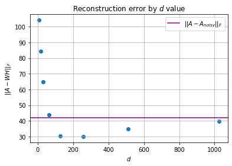

It started with a very practical question: how do you store images using less space? Our tool was non-negative matrix factorisation (NMF), and our dataset was 500 tiny 24 × 24 pixel-art faces, each with colour and transparency channels.
The idea
Flatten every image into a column and stack them into one big matrix \(A \in \mathbb R_{\ge 0}^{n\times m}\), one column per image. NMF approximates it as a product of two smaller non-negative matrices:
$$A \approx WH, \qquad W \in \mathbb R_{\ge 0}^{n\times d},\quad H \in \mathbb R_{\ge 0}^{d\times m}.$$- The columns of \(W\) are \(d\) building blocks, each one an image-sized pattern.
- Column \(j\) of \(H\) says how much of each building block image \(j\) uses.
Instead of \(nm\) numbers you store \(d(n + m)\). Our RGB images have \(n = 24 \cdot 24 \cdot 3 = 1728\) values each (we handled transparency separately), and with \(m = 500\) images the full matrix holds 864,000 numbers. With \(d = 64\), the factors hold about 143,000, roughly 17%.
The algorithm
We want to minimise the Frobenius norm \(\lVert A - WH\rVert_F\) under the constraint that nothing is negative. Lee and Seung's multiplicative update rules do exactly that, with \(\odot\) and \(\oslash\) as elementwise multiplication and division:
$$H \leftarrow H \odot \big(W^\top A\big) \oslash \big(W^\top W H\big), \qquad W \leftarrow W \odot \big(A H^\top\big) \oslash \big(W H H^\top\big).$$Because every update multiplies by a ratio of non-negative numbers, anything that starts non-negative stays non-negative. No projections or clipping needed, and the error never increases from one iteration to the next:
$$\lVert A - W_{k+1}H_{k+1}\rVert_F \le \lVert A - W_kH_k\rVert_F.$$Each iteration is dominated by matrix products costing \(O(nmd)\), so runtime grows roughly linearly with \(d\), which is exactly what we measured.
Sanity checks on tiny matrices
Before touching images, we tested on small matrices. Factorising the \(2\times2\) identity with \(d = 1\) loses information (error \(1.00\)), because a rank-1 product can't represent two independent directions. With \(d = 2\) the error dropped to \(6.4\times10^{-10}\). The general rule: once \(d\) reaches the rank of the matrix, NMF can drive the error towards zero. Our image matrix had rank 406.
The building blocks are parts
Something I didn't expect came before any factorisation: the mean face of the dataset still looked clearly like a face. The designs are so similar that averaging them doesn't produce a mess, just a slightly blurry character with a cloud of possible accessories around it.
Because nothing can be negative, NMF can't build a face by adding and subtracting patterns. It can only add pieces together. So the building blocks in \(W\) turned out to be recognisable parts: hairstyles, glasses, beards and face shapes. Nobody told it what a beard is.
Try: drag the weights. Notice: every face is just building blocks added together. That's one column of H. Because weights can't be negative, the blocks have to be real parts, like a hat or a beard.

With \(d = 25\) each block mixes several features (beard, glasses, hair and face in one). As \(d\) grows, they split into finer and finer parts. Reconstructing all images from \(d = 64\) blocks preserved the shapes remarkably well (error 39.70), though the colours came out a little brighter and washed out.
Denoising
Next we added Gaussian noise with standard deviation \(\sigma\) to the colour channels and asked: is the reconstruction from a noisy factorisation closer to the clean image than the noisy image itself? With \(\sigma = 0.1\), the noisy images were 42.00 away from the originals. The question is which \(d\) to choose.

- Too few blocks: the reconstruction misses real details (underfitting).
- Too many blocks: the factorisation starts learning the noise as well (overfitting).
- In between: the reconstruction is closer to the clean images than the noisy input was.
We searched for the best \(d\) at three noise levels:
| Noise \(\sigma\) | Best \(d\) | Stored size vs. original |
|---|---|---|
| 0.05 | 334 | 86.1% |
| 0.10 | 171 | 44.1% |
| 0.20 | 110 | 28.4% |
The pattern makes sense: the more noise, the earlier extra blocks start fitting noise instead of signal, so the best \(d\) drops. With \(\sigma = 0.1\), the best reconstruction was both closer to the clean images than the noisy data and less than half the size. The catch is that finding that \(d\) means factorising many times, which is expensive.
It's also a concrete example of the bias–variance trade-off: a curve with a minimum you can actually find.
Try it yourself
Here NMF runs live in your browser. The faces below are generated from a handful of hidden parts (a face, eyes, a smile, a hat, glasses, a beard) mixed at random. NMF only sees the finished faces, never the parts. Press start and watch the building blocks appear.
Try: watch it run, then change d and press start again. Notice: the building blocks start as noise and turn into separate parts: hat, glasses, beard, smile.
Top row: some of the input faces. Bottom row: the building blocks (columns of W) NMF has found so far. Too few blocks and parts get merged; enough, and each block becomes one part.
The notebook is on GitHub.